近日，巴黎奥运会上众星云集，就连退役多年的“亚洲飞人”刘翔也罕见露面，还和法国球星姆巴佩同框互送礼物，令不少网友直呼梦幻联动。
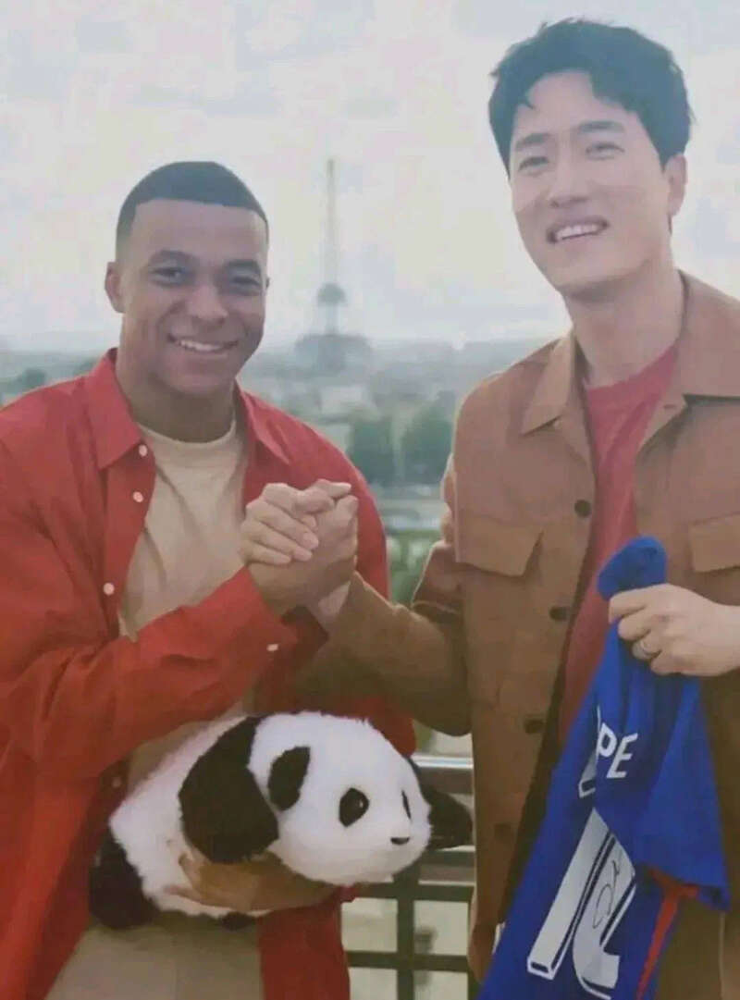
据说这次他将以特邀嘉宾身份参与部分田径项目的解说工作。刘翔自己也晒出在巴黎闲逛视频，只见他现身在热闹的街头，但周边的路人都没有人认出来他，安心享受普通游客的闲暇时光。
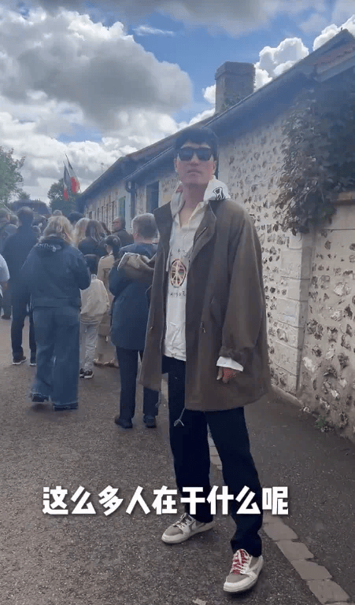
作为曾经的体坛顶流，刘翔自从伦敦奥运会因伤退赛后便渐渐淡出了公众视野。
不过就在一个月前的7月11日，刘翔宣布“复出”的消息刷屏网络，原来是因为他新入驻了一个社交平台，还发布了一段30多秒的自我介绍视频，一下勾起万千网友的回忆杀。
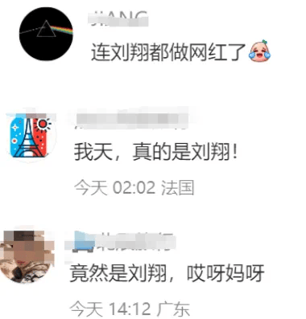
很多人猜测刘翔或许是准备以短视频博主的身份复出，体坛明星也要走上当网红的道路，不过刘翔或许也是想多个渠道和粉丝分享日常生活，不管怎么样，但总归都是以另一种形式重回大众视野了。
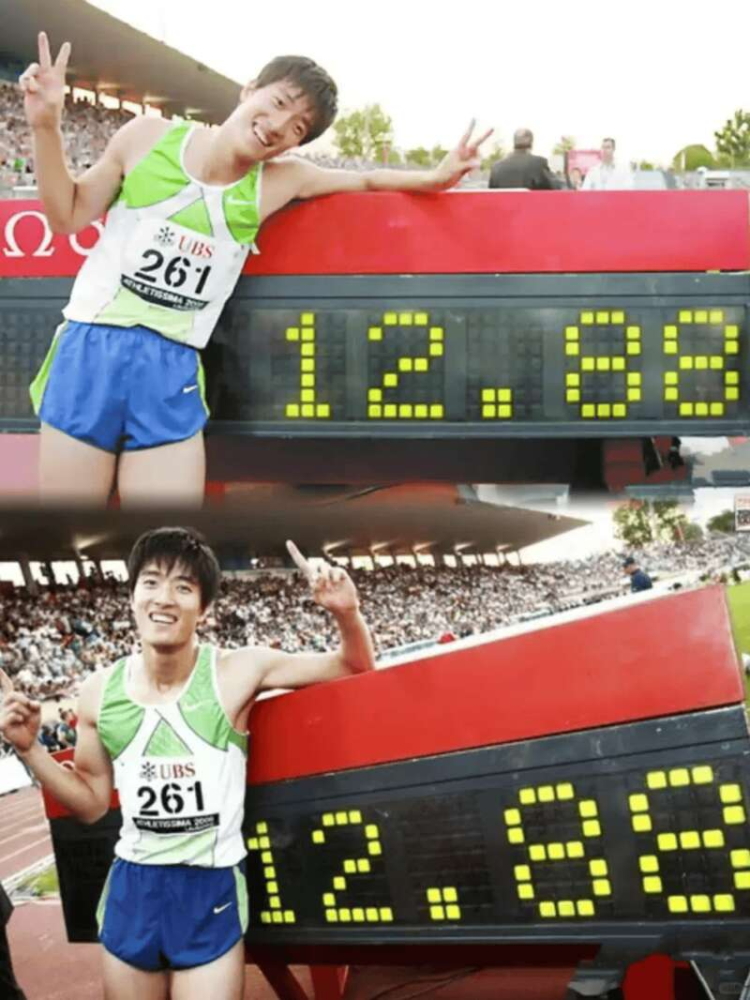
虽然围绕他的争议很多，但刘翔对于中国体坛的贡献无可非议。2004年雅典奥运会上，21岁的刘翔一战成名，以12秒91的成绩刷新奥运纪录，成为历史上第一位拿下奥运田径短跑项目冠军的黄种人。
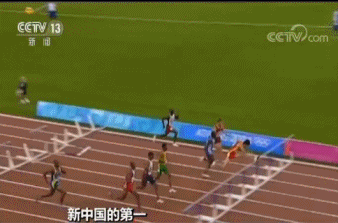
这枚金牌也被认为是中国历史上含金量最高的一枚，因为它证明了黄种人可以在短跑项目上打败黑人和白人。
赛后采访时，刘翔眼角含泪光道：“谁说黄种人不能拿到奥运会前八名，我今天一定要证明给大家看，我是奥运冠军。”
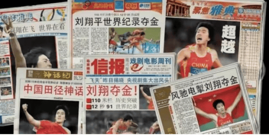
一夜之间，刘翔成为了家喻户晓的民族英雄，他霸占了各大媒体头条，无数代言采访接连而至，在顶着巨大光环的同时，前所未有的压力也向他袭来。
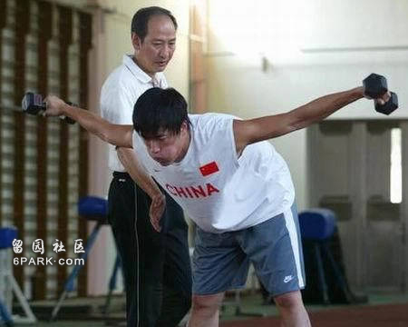
2008年北京奥运会，人们都期待刘翔能够再度创造历史，当时有刘翔参加的比赛门票一度被炒到8万元一张，没有人允许他在家门口输掉比赛。然而比赛开始后，刘翔却宣布因伤退赛，在网上引发轩然大波。
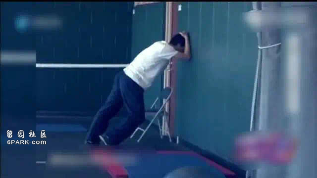
从“亚洲飞人”到跌落神坛，只需要一场比赛的时间。当时网上对刘翔的谩骂声一片，“刘跑跑”、“撒谎精”、“刘骗子”的骂名不绝于耳。哪怕教练孙海平哭着帮他解释：“刘翔一直在玩命”，也没能平息观众怒火。
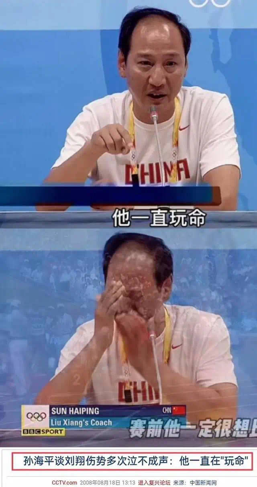
四年后的伦敦奥运会，相同的情况再次上演。因脚跟腱断裂，刘翔在预赛第一个跨栏的时就重重地摔倒在地。
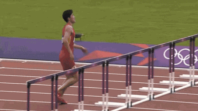
这一次，他或许是意识到，这也许是自己运动生涯最后一次站在起跑线上了，在直播镜头下，刘翔转身返回到起跑线，单脚艰难地跳到最后一个跨栏，满脸不舍不甘地弯腰亲吻了栏杆。
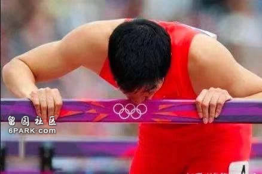
双奥失利带来的是更大的打击，刘翔一度被骂到关闭社交评论，甚至曾想过以死谢罪。很多人只记得刘翔两次退赛，却完全抹去了他对中国田径做出的贡献。
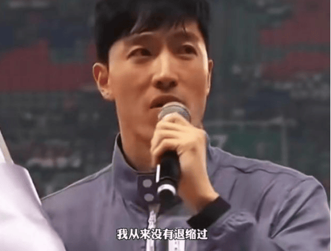
2015年，刘翔在上海8万人体育场内宣布退役，结束了15年的体育生涯。
除了赛场上的得失，观众还把目光转移到了他的感情状况上。
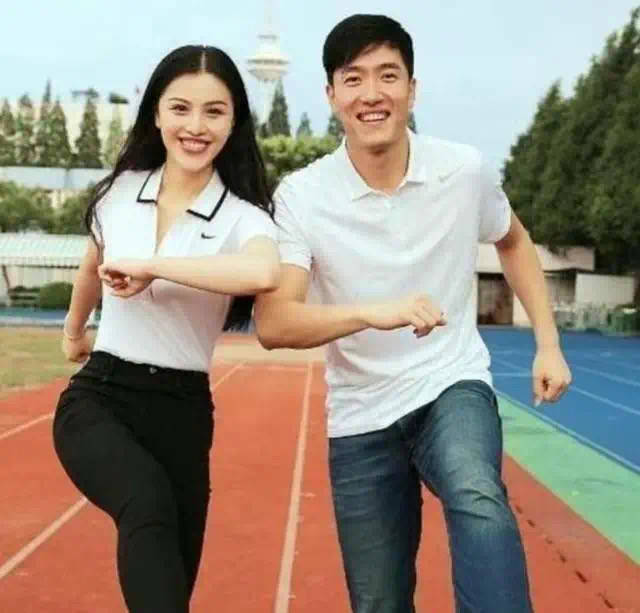
2014年，刘翔和陪伴自己走过职业生涯低谷的演员葛天结婚，然而两人的婚姻仅维持了9个月就宣告结束。
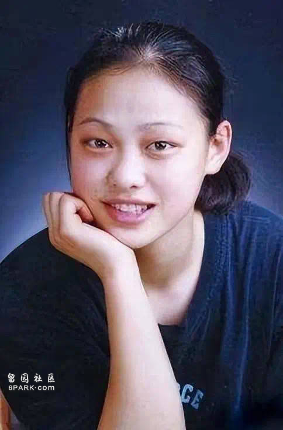
离婚仅仅半年，刘翔就被拍到了新恋情，对象是他的初恋女友、前女子撑杆跳选手吴莎，很快两人便举办了婚礼。
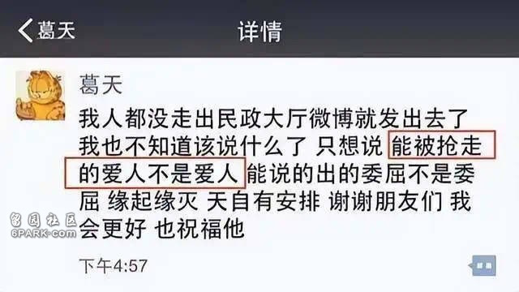
也正是在这期间，关于刘翔劈腿的传言愈演愈烈，有网友扒出了葛天在离婚当天发的朋友圈截图，她表示“能被抢走的爱人不是爱人，能说出的委屈不是委屈”，疑暗指有小三插足。
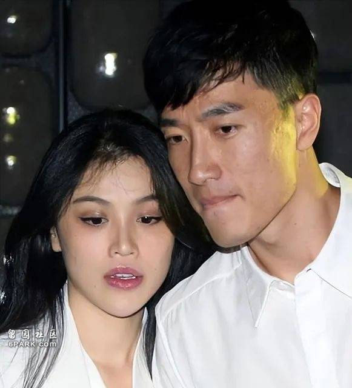
葛天和吴莎也从此成了仇敌，两人时常在网上互相对骂，互不示弱。
不过就在最近，刘翔与吴莎又传出了婚变消息，有媒体爆料称，刘翔与吴莎结婚后便特别喜欢在社交媒体上晒出夫妻恩爱日常，但最近很长一段时间都没有发过与吴莎的合照。
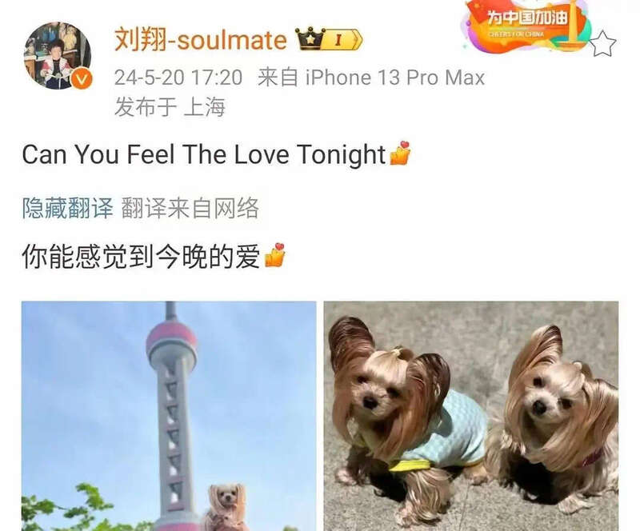
甚至连520当天，也只是发了张宠物狗的照片，似乎间接印证了与吴莎之间的隔阂。
要知道很多明星的情变都是从社交动态上被捕捉到的。而且两人结婚8年，却一直没有孩子，刘翔还曾经表示过自己很喜欢小孩。
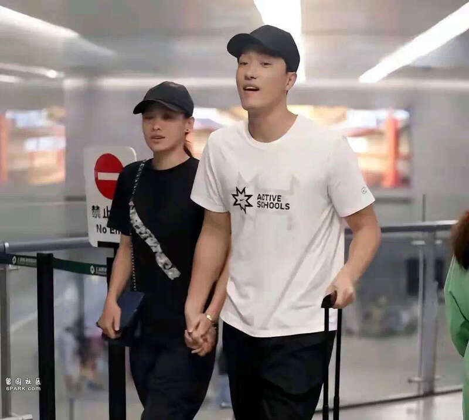
因此外界各种猜测纷纷涌现，有不少人认为刘翔运动员时期的伤病史可能影响了他的生育能力。
去年前妻葛天在直播时，涌进不少吃瓜群众向她问起这个问题，有网友直接在弹幕区打出“刘翔不能生育，所以小葛和他离婚了”，随后相关讨论更是直接霸屏。
葛天看到后态度有些避讳，却也没有直接反驳，只是含糊说道：“我的直播间不提别的人”。
不过婚后选择不育的明星在娱乐圈并不罕见，或许刘翔和吴莎只是希望能好好享受二人世界。
除了感情生活，还有很多人关心刘翔退役后的收入来源，前段时间还有报道称刘翔涉足时尚圈复出，转行当了模特，还配了一张他在T台走秀的照片。只见刘翔穿着一身大衣，一米八九的个子高大有型，五官帅气硬朗，看起来还真的不输专业模特。不过这其实是他在帮好友古天乐站台的走秀照，并不是彻底转了行。
还有传言称，刘翔因为在国内的声誉遭受重创，所以选择出国定居，并将家人也一起带到了美国，甚至考虑换籍。再加上他近几年长期在国外旅行，似乎更加印证了这个猜测。
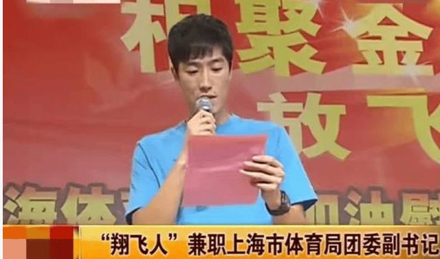
但事实上，退役后的刘翔曾退居幕后到上海体育局“兼职”，仍然在为中国体育事业效力，苏炳添就是在刘翔的见证下培养起来的。
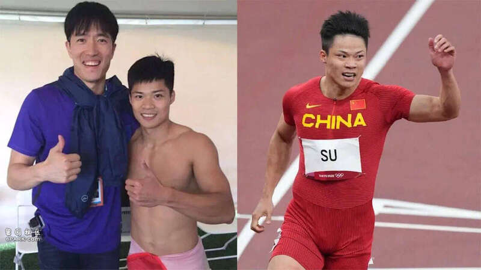
除此之外，刘翔如今的品牌代言、线下活动收益也不少，有媒体统计，哪怕是已经退役，刘翔如今每个代言合同都在千万级别以上，商业价值依旧是头部级别。
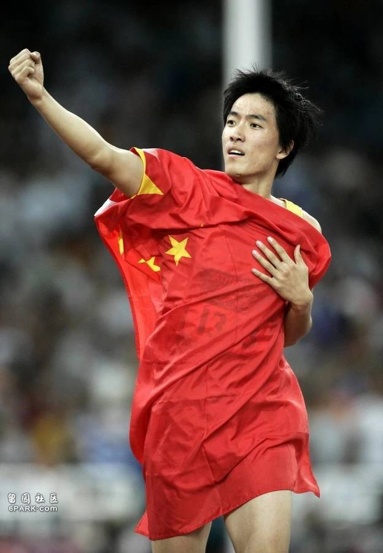
从2000年崭露头角，到2012年最后一次参赛，刘翔在12年的运动生涯里参加了48次国际大赛，共取得 36金 6银3铜，这样的战绩哪怕放到今天也是无人能及。这样优秀的运动员，却因为两次失利被大众骂了十几年。
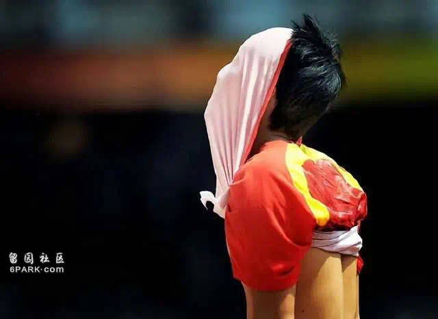
时至今日，人们才发现曾经对刘翔实在太苛刻了，当越来越多的网友喊出：“我们欠刘翔一个道歉”的口号，刘翔只是淡淡回应：“我不需要道歉，我也从来没有抱怨过谁，一个时代能刮一阵风，我觉得就够了。”（文/lily）
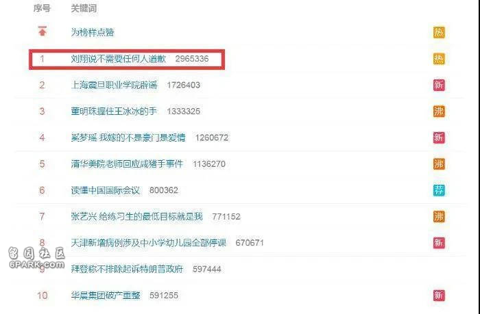